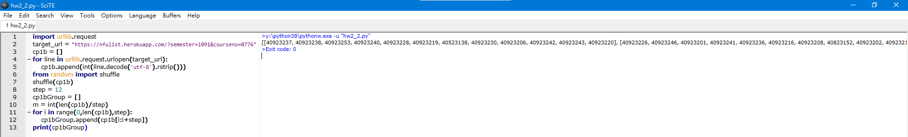

HW2-2 <<
Previous Next >> 2-2(加退選)
2-1(亂數分組)
Kaggle:https://www.kaggle.com/gg542466/hw2-2-1
import urllib.request
target_url = "https://nfulist.herokuapp.com/?semester=1091&courseno=0776"
cp1b = []
for line in urllib.request.urlopen(target_url):
cp1b.append(int(line.decode('utf-8').rstrip()))
from random import shuffle
shuffle(cp1b)
step = 12
cp1bGroup = []
m = int(len(cp1b)/step)
for i in range(0,len(cp1b),step):
cp1bGroup.append(cp1b[i:i+step])
print(cp1bGroup)
解題步驟:
1.導入要使用的物件。
import urllib.request
2.設定目標網址。
target_url = "https://nfulist.herokuapp.com/?semester=1091&courseno=0776"
3.設定名為cp1b的數列。
cp1b = []
4.使用for-loop以line跟url為變數,並且讓cp1b新增編碼後的line,然後消除字尾的符號。
for line in urllib.request.urlopen(target_url):
cp1b.append(int(line.decode('utf-8').rstrip()))
5.shuffle沒有辦法直接使用,需導入random模塊加以使用。
from random import shuffle
6.將cp1b裡的原素隨機排列。
shuffle(cp1b)
7.將每次分組的停止點設12人為上限。
step = 12
8.另設一個名為cp1bGroup的數列。
cp1bGroup = []
9.設m為變數,int功用為cp1b取整數,len為計算cp1b的人數,step為一組取12人。
m = int(len(cp1b)/step)
10.再次使用for-loop以i在範圍(以0開頭,len為計算cp1b的人數,在第12人結束),
讓cp1bGroup新增定義i的步長與停止點。
for i in range(0,len(cp1b),step):
cp1bGroup.append(cp1b[i:i+step])
11.打印出數列cp1bGroup。
print(cp1bGroup)
成果:

HW2-2 <<
Previous Next >> 2-2(加退選)